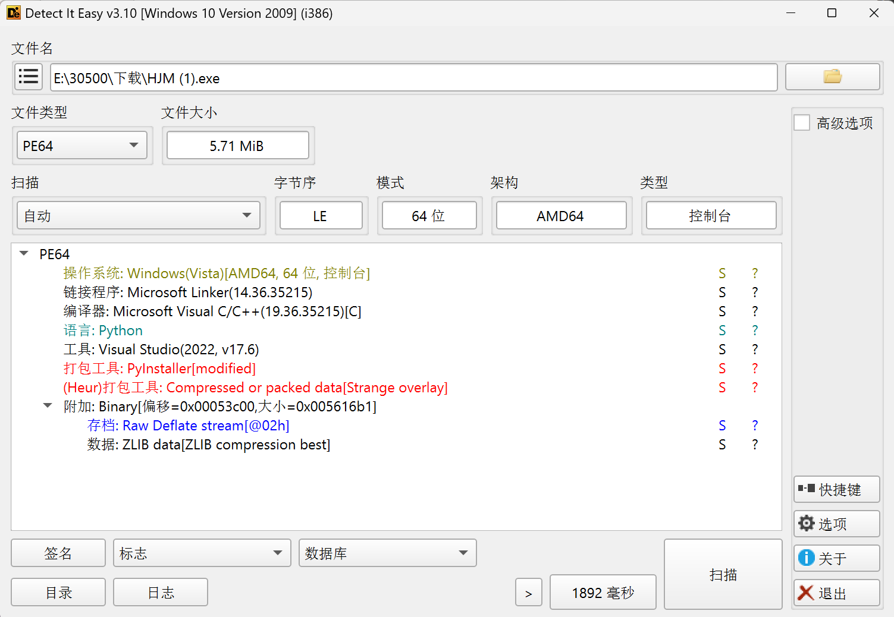
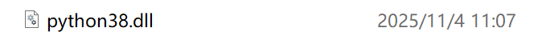
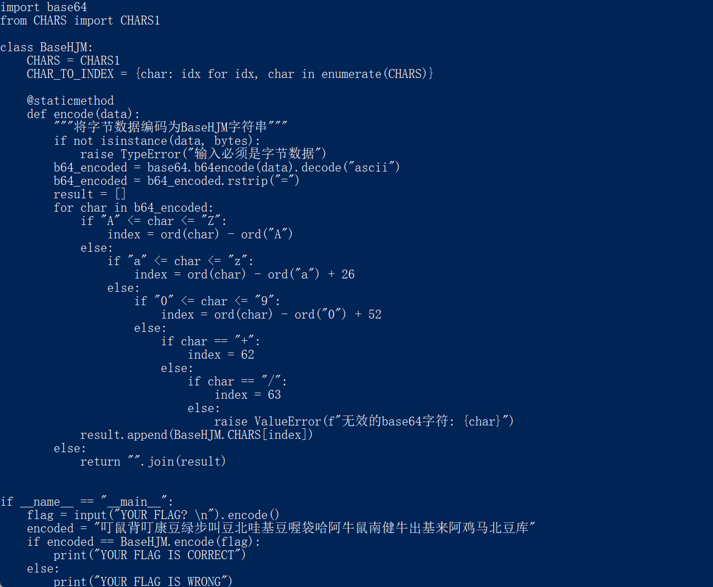
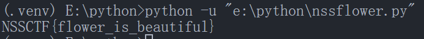

[NSSCTF 2025 秋招赛] 哈基米
题目三:哈基米
附件是一个 exe，拖进 DIE 一眼就能看出是 PyInstaller 打包。

直接用 pyinstxtractor 解包，能拿到一堆 pyc 文件。
在生成的 pyi 清单里能看到目标运行时是 Python 3.8。

因此反编译时选 uncompyle6（或仓库里的 Exe-decompiling），优先把 HJM.pyc 还原。

伪代码里引用了另一个模块里的 CHARS1。顺着路径继续反编译，就能得到生成表的逻辑。把那段代码抄进自己的脚本，按原算法恢复字母表，再和密文做一遍同样的处理即可拿到 flag。
